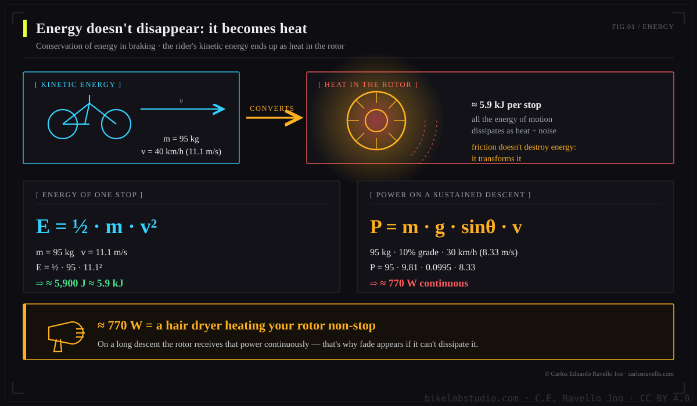
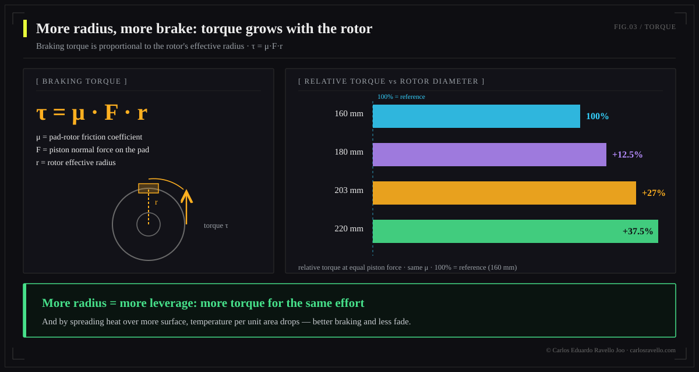
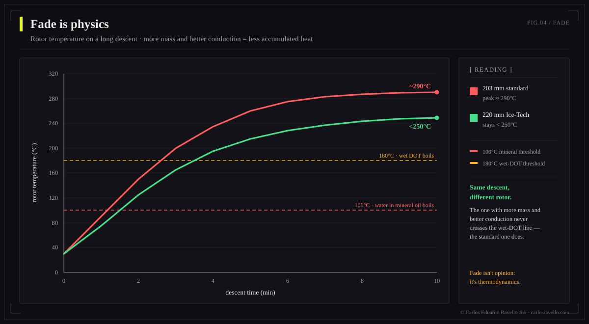
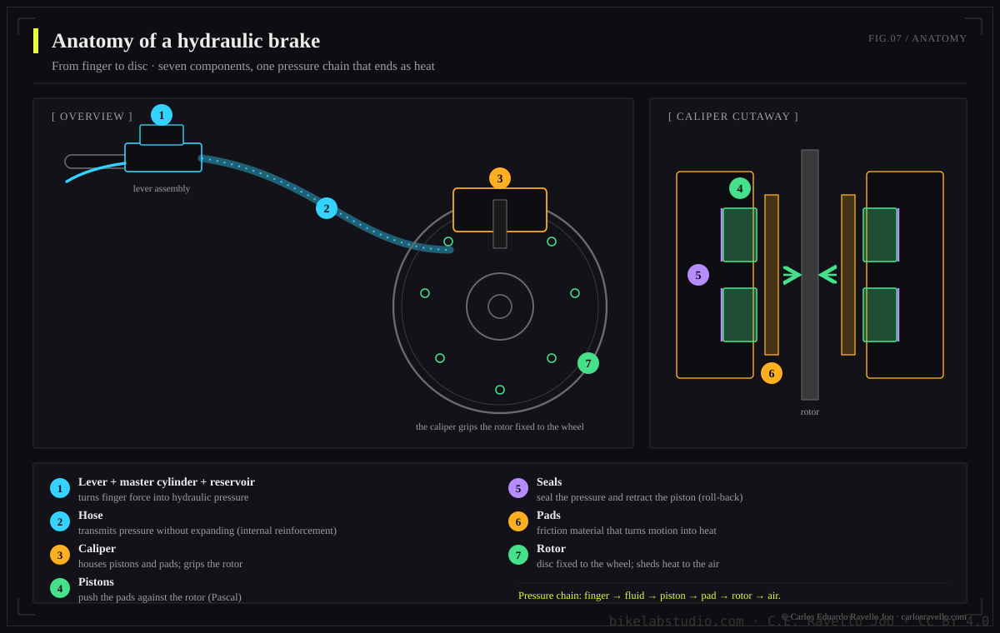
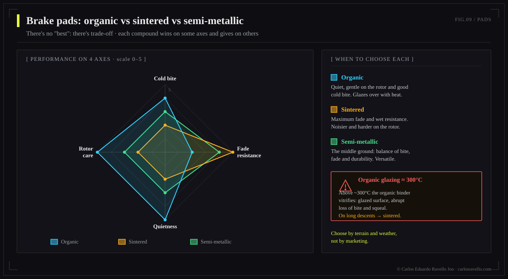
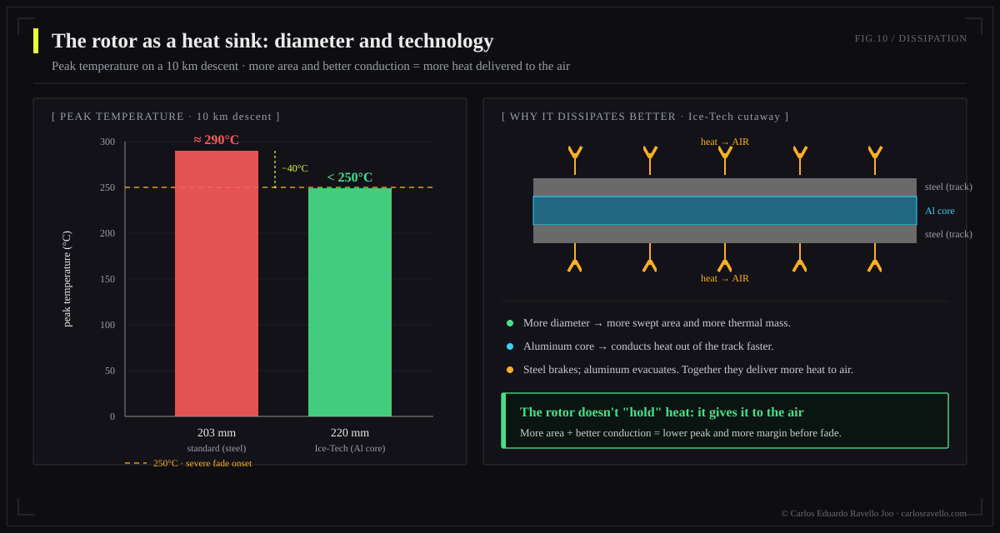

A hydraulic brake converts the energy of motion into heat (E = ½·m·v²) and multiplies your finger's force through hydraulic advantage (Pascal) to stop you. Its Achilles' heel is heat (fade) and fluid contamination: DOT absorbs water, mineral oil pools it in the caliper. That's why bleeding isn't cleaning: if the fluid is degraded, a full service is required. In 2025-2026 the market leapt in power (Brembo GR-PRO, SRAM Maven, Shimano XTR M9220).
This is a reference work, not another tutorial. The goal is for you to understand why a brake behaves the way it does —with the physics in hand— and to make fluid, pad, rotor and maintenance decisions on evidence, not forum myths. Each section stands alone; together they form the encyclopedia.
- The physics of braking: energy that becomes heat
- Hydraulic advantage: why your finger stops 100 kg
- Torque and rotor radius
- Fade: when heat wins
- Anatomy of the system
- The fluid: DOT vs mineral oil
- The truth about bleeding: why bleeding doesn't clean
- Pads and rotors
- The 2025-2026 market
- Myths and truths
1. The physics of braking: energy becoming heat

Braking isn't "grabbing the wheel": it's a conservation of energy problem. You and the bike have kinetic energy because you're moving, and the brake doesn't destroy it —it transforms it into heat through friction between the pad and rotor—. The faster you go, the problem grows squared.
The feared case isn't the single stop, but the long descent: there the brake dissipates power continuously, and the thermal power is brutal.

2. Hydraulic advantage: why your finger stops 100 kg
A liquid is practically incompressible and transmits pressure equally in all directions: that's Pascal's principle. The brake exploits this with two different areas —a small piston in the lever (master cylinder) and large pistons in the caliper— multiplying force.

3. Torque and rotor radius
The pad's force acts at a distance from the axle: the rotor radius. Braking torque —what actually slows the wheel— is that force times that radius.

4. Fade: when heat wins
Fade (loss of braking power) happens when the system makes heat faster than it sheds it. Two things fail: the fluid boils (its vapor IS compressible → spongy lever, "vapor lock") and the pad glazes. Thresholds matter: water trapped in mineral oil boils at 100°C, wet DOT near 180°C, and an organic pad starts to glaze around 300°C.

On a 10 km descent, a standard 203 mm rotor can reach ~290°C, while a 220 mm with an aluminum core (Ice-Tech) stays below ~250°C: more surface and better conduction shed heat to the air faster.
5. Anatomy of the system
Understanding the parts is understanding where it fails. From lever to rotor, every interface is a point of pressure, heat or contamination.


6. The fluid: DOT vs mineral oil
The fluid is the brake's invisible muscle. There are two chemically incompatible families, and choosing wrong —or mixing them— ruins the seals. The key difference is how they relate to water.
| Property | DOT 4 | DOT 5.1 | Mineral oil |
|---|---|---|---|
| Base | Glycol | Glycol | Refined petroleum |
| Dry boiling point | ~230°C | ~270°C | ~225°C |
| Wet boiling point | ~155°C | ~180°C | n/a (no absorption) |
| Relation with water | Hygroscopic | Hygroscopic | Hydrophobic |
| Corrosive / harms paint | Yes | Yes | No |
| Seals | EPDM | EPDM | Nitrile |
| Change | 6-12 months | 6-12 months | 12-24 months |
| Brands | SRAM, Hope, Hayes | SRAM, Hope | Shimano, Magura, TRP |

The water paradox: DOT suspends it throughout the circuit (gradual drop in boiling point), while mineral oil rejects it and lets it fall to the lowest, hottest point —the caliper— where it boils at 100°C and triggers sudden fade. Neither is immune; each fails differently.

7. The truth about bleeding: why bleeding doesn't clean
Here is the thesis almost nobody explains: a simple bleed removes air and replaces some fluid, but it does not clean the system. Sediment, pooled water, particles from worn seals and oxidized fluid stay behind. Reinjecting fluid over that contamination scratches pistons, swells seals and corrodes the caliper.

"If the lever feels good after the bleed, the system is healthy." False. A system can have contaminated pistons, degraded seals and corrosion, and still feel right just after a bleed. The damage keeps advancing inside.
When is a bleed enough and when is a full service due? The decision tree resolves it by symptoms:


Golden rule: every intervention uses fresh fluid. Topping up or reusing reintroduces water and particles and doesn't restore the fluid's properties. We develop the per-system procedure in our brake-bleed guide.
8. Pads and rotors
The pad is the interface where heat is born; the rotor, the heat sink that must shed it. Choosing a compound is choosing a balance between bite, heat resistance, noise and wear.


9. The 2025-2026 market
Bicycle braking is living its biggest leap in years, driven by the weight and speed of e-bikes and downhill. The highlights:
| System | What's new | Why it matters |
|---|---|---|
| Brembo GR-PRO (2026) | 4×18 mm caliper, own mineral oil, 200-220 mm/2.3 mm rotors, lever with 3 adjustments | The MotoGP brand enters MTB; debut at the DH World Cup with Specialized Gravity (~€800) |
| SRAM Maven | Large 4 pistons (18 mm), among the most powerful on the market | Benchmark power for gravity and e-bike |
| Shimano XTR M9220 (2025) | New low-viscosity mineral oil | Fixed the "wandering bite point" and pad rattle |
| Hope Tech 4 V4 / EVO+GR4 | More power (+~6% the new EVO), CNC machined | Benchmark modulation and serviceability |
| TRP DHR Evo / Magura MT7 | Four pistons, downhill/e-bike focus | Great power-to-value and feel |
The trend is clear: bigger pistons, thicker rotors, optimized fluids and less obsession with weight in favor of thermal stability.
10. Myths and truths
| Myth | Truth |
|---|---|
| "More grease/fluid = better" | Excess or old fluid improves nothing; what matters is fresh, clean fluid and no air. |
| "Bleeding makes it like new" | Bleeding doesn't clean installed contamination; sometimes a full service is needed. |
| "DOT and mineral are interchangeable" | No. Mixing them destroys the seals (EPDM vs nitrile). |
| "Tighter bolts = more braking" | Torque comes from the system and rotor radius; over-tightening bolts adds no power. |
| "Metallic pads are always better" | It depends on heat and terrain; in mild use, organic bites better and is quieter. |
BikeLab Studio.
Frequently Asked Questions
Why does a bicycle brake get so hot?
Because braking converts kinetic energy into heat (E = ½·m·v²). On a 10% descent at 30 km/h, a 95 kg system dissipates ~770 W continuously —like a hair dryer aimed at the rotor non-stop— which is why fade appears when heat outpaces dissipation.
Which is better, DOT or mineral oil?
Neither is "better": different chemistries, not interchangeable. DOT is hygroscopic (its boiling point drops over time) and tolerates more heat; mineral is stable, but any water that enters pools in the caliper and boils at 100°C. Use what your maker specifies and never mix them.
Does bleeding the brake make it like new?
Not always. Bleeding removes air and some fluid, but doesn't clean sediment, water or particles. If the fluid is dark, pistons sticky or there's corrosion, a full service with cleaning and sometimes a seal kit is needed.
Organic, sintered or semi-metallic pads?
Organic: sharp bite and quiet, but glaze around 300°C. Sintered: handle more heat, ideal for downhill/e-bike, with some noise and rotor wear. Semi-metallic: the middle ground.
Does Brembo make bicycle brakes?
Yes. In 2026 it unveiled the GR-PRO for MTB: a 4-piston caliper (18 mm) with its own mineral oil, 200-220 mm rotors and a lever with three adjustments, with MotoGP heritage. It debuted at the DH World Cup with Specialized Gravity.
How often should a hydraulic brake be serviced?
Fluid: DOT every 6-12 months, mineral every 12-24. Bleed: when the lever feels spongy. Full service: every 1-2 years in hard use, e-bikes or wet climates, or at the first sign of contamination.
References
- BikeRadar — Brake fluid: mineral oil vs DOT.
- Pinkbike — Brembo GR-PRO MTB brake system; Big Brake Test 2026.
- Epic Bleed Solutions — DOT vs mineral oil; fluid degradation and contamination.
- BikeRadar — Disc brake pads: organic vs sintered vs semi-metallic.
- ScienceDirect / engineering literature — disc heat dissipation and brake fade.
- Manufacturer manuals (Shimano, SRAM, Magura, Hope) — fluids, torques and bleed procedures.
Need to know what your bike runs —Post Mount vs Flat Mount, Center Lock vs 6-bolt, which rotor fits? It's all in the BikeLab-pedia Disc Brake cluster.